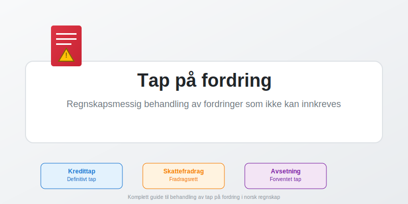
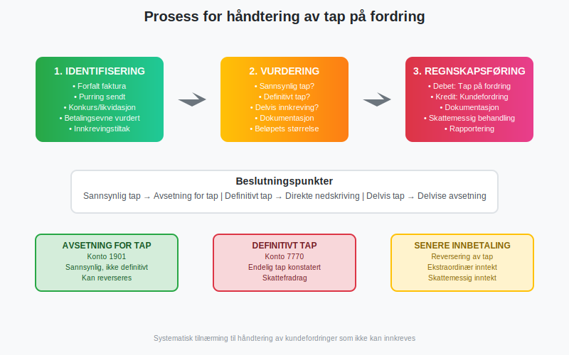
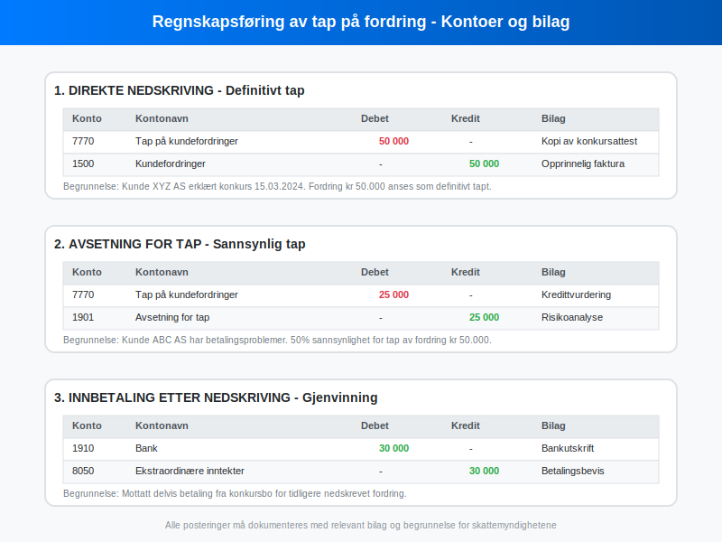
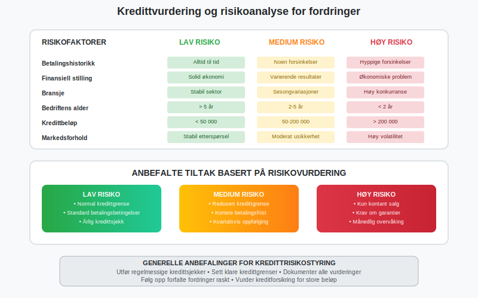
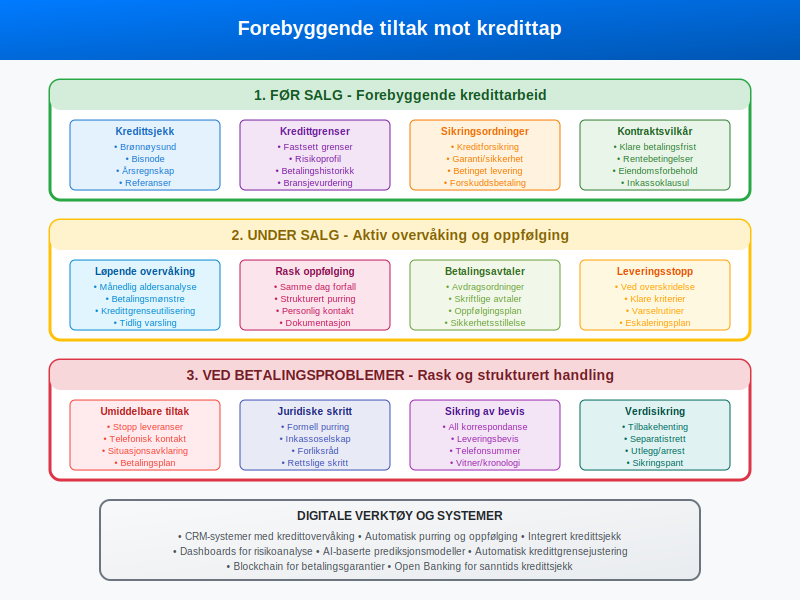
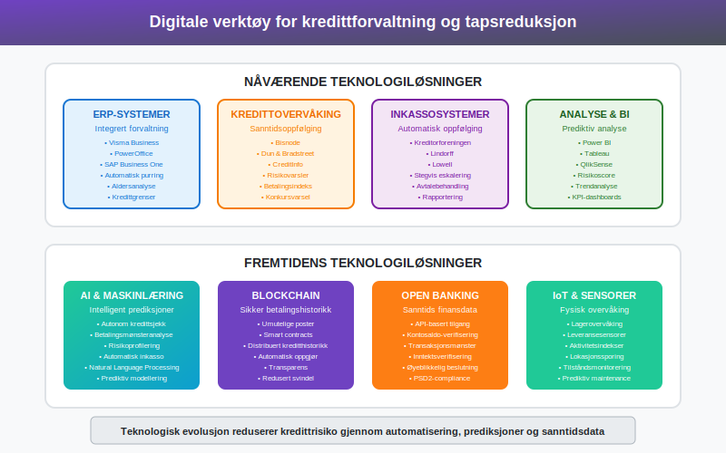

Tap på fordring er en regnskapsmessig og skattemessig realitet som alle bedrifter med kreditsalg må forholde seg til. Når kunder ikke kan eller vil betale sine kundefordringer, må bedriften ta høyde for at deler av eller hele fordringen kan gå tapt. En grundig forståelse av hvordan slike tap skal håndteres er avgjørende for god regnskapsskikk og korrekt skattebehandling.
For en generell innføring i fordringer, se Hva er fordring?.

Tap på fordring oppstår når en bedrift må erkjenne at en kunde ikke kommer til å betale sin gjeld. Dette kan skyldes kundens konkurs, betalingsevneproblemer, eller at kunden rett og slett nekter å betale. Uavhengig av årsaken må bedriften håndtere dette profesjonelt og i tråd med gjeldende regnskaps- og skatteregler.
Hva er tap på fordring?
Tap på fordring refererer til den delen av kundefordringer som en bedrift ikke lenger forventer å motta betaling for. Dette kan være et definitivt tap hvor det er fastslått at fordringen aldri vil bli betalt, eller et sannsynlig tap hvor det er stor risiko for at betalingen ikke kommer.
Definitivt tap oppstår når:
- Kunden er erklært konkurs
- Selskapet er tvangsoppløst
- Kunden er død uten arv som kan dekke gjelden
- Alle praktiske innkrevingstiltak er uttømt
Sannsynlig tap kan identifiseres gjennom:
- Betalingsvansker over lengre tid
- Manglende respons på purringer
- Konkurstruede virksomheter
- Generelle markedsforhold i kundens bransje

Regnskapsføring av tap på fordring
Regnskapsføring av tap på fordring følger regnskapsprinsippene og avhenger av om tapet er definitivt eller sannsynlig.
Definitivt tap - direkte nedskriving
Når et tap er definitivt konstatert, skal fordringen nedskrives direkte:
Bilagspost:
Debet: Konto 7770 - Tap på kundefordringer 50 000
Kredit: Konto 1500 - Kundefordringer 50 000
Denne posteringen fjerner fordringen fra balansen og belaster resultatregnskapet med tapet.
Sannsynlig tap - avsetning
For sannsynlige tap brukes avsetning for tap:
Bilagspost:
Debet: Konto 7770 - Tap på kundefordringer 25 000
Kredit: Konto 1901 - Avsetning for tap 25 000
Avsetning for tap er en kontrapost som reduserer den bokførte verdien av kundefordringer uten å fjerne selve fordringen.

Senere innbetaling
Dersom en tidligere nedskrevet fordring senere blir betalt helt eller delvis, regnskapsføres dette som ekstraordinær inntekt:
Bilagspost:
Debet: Konto 1910 - Bank 30 000
Kredit: Konto 8050 - Ekstraordinære inntekter 30 000
Skattemessig behandling
Den skattemessige behandlingen av tap på fordring er strengere regulert enn den regnskapsmessige. For å få skattemessig fradrag må spesifikke vilkår være oppfylt.

Vilkår for skattefradrag
Hovedvilkår:
- Definitivt tap: Tapet må være endelig konstatert
- Skattepliktig inntekt: Fordringen må tidligere være tatt opp som skattepliktig inntekt
- Dokumentert innkrevingsforsøk: Alle rimelige innkrevingstiltak må være forsøkt
Situasjoner som gir fradragsrett:
- Konkurs erklært av skifteretten
- Tvangsoppløsning av selskap
- Gjeldsforhandling hvor tap er dokumentert
- Betalingsstandsning med endelig avklaring
- Dødsfall uten arv som kan dekke gjelden
Dokumentasjon som kreves:
- Konkursattest fra skifteretten
- Utskrift fra Enhetsregisteret i Brønnøysund
- Purrekorrespondanse og inkassodokumenter
- Kreditoravtaler eller forliksavtaler
- Bevis på gjennomførte innkrevingstiltak
Tidspunkt for fradrag
Skattemessig fradrag kan først kreves når tapet er definitivt konstatert. Dette kan være senere enn når det regnskapsmessige tapet er bokført. Avsetninger for sannsynlige tap gir ikke skattefradrag før tapet er realisert.
MVA-konsekvenser
Når et tap på fordring er konstatert, må bedriften også vurdere MVA-konsekvenser. Dersom den opprinnelige fakturaen inkluderte MVA, kan bedriften ha krav på tilbakebetaling av MVA på det tapte beløpet.
Identifisering og vurdering av kredittrisiko
Effektiv kredittrisikostyring er avgjørende for å minimere tap på fordringer. Dette innebærer systematisk overvåking og vurdering av kunders betalingsevne.

Kredittsjekk før salg
Grunnleggende kredittsjekk:
- Sjekk i Brønnøysund Register
- Henting av årsregnskap fra tidligere år
- Kredittrapporter fra Bisnode, DnB eller lignende
- Referanser fra andre leverandører
- Vurdering av bransje og markedsforhold
Nøkkeltall for vurdering:
| Nøkkeltall | Beregning | Tolkning |
|---|---|---|
| Soliditetsgrad | Egenkapital / Totalkapital | Høyere = bedre |
| Likviditetsgrad | Omløpsmidler / Kortsiktig gjeld | > 2 = bra |
| Gjeldsgrad | Total gjeld / Totalkapital | Lavere = bedre |
| Rentabilitet | Resultat / Omsetning | Positiv trend |
Løpende overvåking
Månedlige oppgaver:
- Aldersanalyse av kundefordringer
- Oppfølging av forfalne poster
- Vurdering av kredittgrenseutnyttelse
- Identifisering av betalingsmønstre
Varselsindikatorer:
- Forsinkede betalinger
- Reduserte bestillinger
- Endrede kontaktmønstre
- Negative nyheter om kunden
- Bransjeproblemer
Forebyggende tiltak
Det beste tapet er det som ikke oppstår. Systematiske forebyggende tiltak kan redusere kredittap betydelig.

Før salg
Kredittgrenser og vilkår:
- Etabler klare kredittgrenser basert på risikovurdering
- Definer betalingsvilkår i salgsavtaler
- Inkluder eiendomsforbehold i kontrakter
- Vurder krav om sikkerhet eller garantier
Kredittforsikring:
- Vurder handelskredittforsikring for store kunder
- Evaluer kostnad/nytte av forsikringsdekning
- Forstå forsikringsvilkår og egenandeler
Under salg
Aktiv oppfølging:
- Etabler rutiner for purring ved forfall
- Oppretthold personlig kontakt med betalingsansvarlige
- Reagér raskt på endringer i betalingsmønster
- Dokumenter all kommunikasjon grundig
Betalingsfasilitering:
- Tilby fleksible betalingsløsninger
- Vurder avdragsordninger ved midlertidige problemer
- Implementer enkle betalingsmetoder
- Send tydelige og profesjonelle fakturaer
Ved problemer
Umiddelbare tiltak:
- Stopp leveranser ved overskridelse av kredittgrenser
- Ta direkte kontakt for avklaring av situasjon
- Etabler realistiske betalingsplaner
- Sikre skriftlig dokumentasjon av avtaler
Digitale verktøy og fremtidens kredittforvaltning
Moderne teknologi tilbyr kraftige verktøy for kredittrisikostyring og tapsreduksjon.

Nåværende teknologi
ERP-systemer som Visma Business, PowerOffice og SAP Business One tilbyr:
- Automatisk purring og oppfølging
- Integrert aldersanalyse
- Kredittgrenseovervåking
- Rapportering og dashboards
Kredittovervåkingstjenester som Bisnode og CreditInfo gir:
- Sanntidsovervåking av kunders økonomiske situasjon
- Automatiske varsel ved endringer
- Betalingsindekser og risikovurderinger
- Konkursvarsler og andre kritiske hendelser
Fremtidens løsninger
Kunstig intelligens og maskinlæring:
- Prediktive modeller for kredittrisiko
- Automatisk kundesegementerering
- Mønstergjenkjenning i betalingsdata
- Intelligente purrestrategier
Blockchain og smart contracts:
- Sikker og transparent betalingshistorikk
- Automatisk oppgjør ved oppfylte vilkår
- Redusert svindelrisiko
- Distribuert kredittinformasjon
Open Banking:
- Sanntidsverifikasjon av kunders betalingsevne
- API-basert tilgang til finansielle data
- Øyeblikkelige kredittvurderinger
- Automatiserte betalingsløsninger
Juridiske aspekter og inkasso
Når forebyggende tiltak ikke er tilstrekkelige, må bedriften ty til juridiske virkemidler for å inndrive fordringer.
Inkassoprosess
Vanlig eskaleringsmodell:
- Purring 1: Vennlig påminnelse med 14 dagers frist
- Purring 2: Tydeligere krav med rente og gebyr
- Inkassovarsel: Formell varsling med juridiske konsekvenser
- Inkasso: Overdragelse til inkassoselskap
- Rettslige skritt: Forliksråd eller ordinær rettsgang
Kostnader og gebyrer:
- Lovbestemte inkassogebyrer etter inkassoloven
- Forsinkelsesrente fra forfallsdato
- Rettsgebyrer og advokatkostnader
- Kostnad-nytte-vurdering av rettslig forfølgning
Sikringsordninger
Utlegg og arrest:
- Utlegg i kundens eiendeler
- Arrest for å sikre fremtidig krav
- Dividende ved konkurs
- Tidsbegrensede sikringsmuligheter
Eiendomsforbehold:
- Bevaring av eiendomsrett til leveranser
- Rett til tilbakehenting av varer
- Separatistrett i konkurs
- Krav til registrering og merking
Bransjevariasjoner og spesielle forhold
Ulike bransjer har forskjellige utfordringer knyttet til tap på fordringer.
Byggebransjen
- Lange prosjektperioder øker risiko
- Komplekse kontraktsforhold
- Krav om garantier og sikkerhet
- Rettsforbehold ved betalingstvister
Handel og tjenester
- Høy kundeomsetning krever effektive systemer
- Sesongvariasjoner påvirker betalingsevne
- Kort kredittperiode reduserer eksponering
- Viktighet av automatiserte prosesser
Eksportbedrifter
- Valutarisiko kompliserer kredittarbeid
- Kulturelle forskjeller i betalingsskikk
- Behov for eksportkredittforsikring
- Juridiske utfordringer på tvers av landegrenser
Rapportering og analyse
Systematisk rapportering av kredittap gir viktig styringsinformasjon.
Nøkkeltall og KPI-er
Kredittaps-ratio:
Kredittaps-ratio = Tap på fordringer / Total omsetning × 100
Kundefordringenes omløpstid:
Omløpstid = (Gjennomsnittlige kundefordringer / Omsetning) × 365
Forfallsstruktur:
- 0-30 dager: 60%
- 31-60 dager: 25%
- 61-90 dager: 10%
- Over 90 dager: 5%
Trendanalyse
Månedlig oppfølging:
- Utvikling i kredittap over tid
- Sammenligning med budsjett og forrige år
- Identifisering av sesongmønstre
- Vurdering av effekten av tiltak
Årsrapportering:
- Samlet kredittapsbelastning
- Fordeling på kundegrupper og bransjer
- Effektivitet av forebyggende tiltak
- Benchmarking mot bransjen
Kontrolltiltak og internkontroll
Robust internkontroll er essensielt for kredittforvaltning.
Autorisasjon og ansvarsfordeling
Kredittgrenser:
- Klar ansvarsfordeling for kredittbeslutninger
- Dokumenterte fullmakter og grenser
- Regelmessig revidering av kredittgrenser
- Fire-øyne-prinsipp for store kreditter
Oppfølging og purring:
- Automatiserte purrerutiner
- Oppfølging av manuelle vurderinger
- Dokumentasjon av alle henvendelser
- Eskaleringsrutiner ved manglende betaling
Revisjon og kvalitetssikring
Periodiske gjennomganger:
- Revidering av kredittpolitikk og prosedyrer
- Kontroll av avsetningers tilstrekkelighet
- Vurdering av dokumentasjons kvalitet
- Benchmarking mot beste praksis
Fremtidige trender og utviklingstrekk
Kredittforvaltning er i kontinuerlig utvikling drevet av teknologi og regulatoriske endringer.
Regulatoriske endringer
Nye regnskapsstandarder:
- IFRS 9 og forventet kredittap-modellen
- Økt fokus på fremadskuende vurderinger
- Mer sofistikerte beregningsmodeller
- Økte dokumentasjonskrav
Personvernregulering:
- GDPR påvirker kredittinformasjonshåndtering
- Krav til samtykke og dataportabilitet
- Begrensninger i datalagring og deling
- Økt fokus på datasikkerhet
Teknologiske innovasjoner
Automatisering:
- AI-drevet risikoscore og kundeklassifisering
- Robotprosess-automatisering (RPA) for rutinetasks
- Chatbots for kundehenvendelser
- Automatisk dokumenthåndtering
Dataanalyse:
- Big Data for bedre risikoprediksjoner
- Sanntidsanalyse av kundeadferd
- Integrering av tredjepartsdata
- Prediktive modeller for konkursprediksjon
Konklusjon
Tap på fordring er en naturlig del av forretningsdrift for bedrifter som yter kreditt til sine kunder. Proaktiv kredittrisikostyring kombinert med korrekt regnskapsmessig og skattemessig behandling er avgjørende for å minimere de negative effektene.
Nøkkelen til suksess ligger i:
- Grundig kredittsjekk før salg
- Systematisk overvåking under kundeforholdet
- Rask og strukturert oppfølging ved betalingsproblemer
- Korrekt dokumentasjon for skattemessige formål
- Investering i moderne teknologiløsninger
Ved å implementere disse prinsippene kan bedrifter betydelig redusere sine kredittap samtidig som de opprettholder konkurransedyktige salgsvilkår. Den kontinuerlige teknologiske utviklingen tilbyr stadig bedre verktøy for risikostyring og tapsreduksjon, og fremtidens kredittforvaltning vil være enda mer datadrevet og automatisert.
For bedrifter som opplever økende kredittap eller mangler systematiske rutiner, er det viktig å søke profesjonell rådgivning fra regnskapsførere eller økonomirådgivere som kan bistå med både praktisk implementering og strategisk utvikling av kredittforvaltningsprosesser.